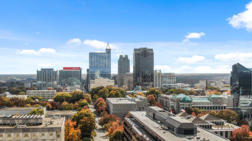

Darby Allison
Recreation Specialist | City of Raleigh Parks and Recreation and Cultural Resources
Patron-focused Wolfpack alumna that seeks to expand her knowledge in Parks and Recreation, particularly in GIS and Spatial Analysis and Strategic Marketing Management. Administrator with seven-plus years of experience who is skilled in Adobe Creative Cloud, office workflow, and CRM systems. Organ Transplant recipient who strives to deliver superior customer service through excellent organization and visual, written, and verbal communication.
Featured Projects
Fall Arts Fair | City of Raleigh, PCRC
Hosted by Sertoma and Pullen Arts Centers, the Fall Arts Fair is an exciting day at Fred Fletcher Park featuring over 80 local vendors, demonstrations, live music, children’s activities, and food trucks. The Fall Arts Fair showcases and markets the work of artists who participate year-round in Sertoma and Pullen and Arts Centers' programs.
During meetings with upper management, I actively engaged and recorded key points for future reference. Collaborating with other specialists for marketing efforts, we hosted over 2,200 guests and 48 booths. During the fair, I represented Parks and Recreation and Cultural Resources by informing fair-goers about upcoming programs and registration in addition to accessibility.
Raleigh ArtsBoard Member | Glen Canyon Conservancy
With other members of the board, Clen Canyon Conservancy protects the public lands across the Colorado Plateau. Working jointly with the National Park Service, Bureau of Land Management, National Forest Service, and the Bureau of Reclamation, G.C.C. provides and inspires stewardship of 3.5 million acres of public lands.
As part of the fundraising committee, I connect with parties interested in investing or sponsoring G.C.C. events and amenities. Through fundraising efforts, we helped raise capital and find sponsors to open a new museum the Powell Museum and Archives. We use support and proceeds from our 10 retail locations to host research, outreach, and educational programs.
Glen Canyon ConservancyWork Experience
Recreation Specialist
City of Raleigh | Parks, Recreation, and Cultural Resources
08/20233- Current
I represent the City of Raleigh by providing customer-focused service to contribute to an enriching experience for our patrons. I provide general oversight of our facility and staff, ensuring standards, in safety and service, are met. By using city-specific brand standards and software, I create informative flyers for marketing. I inform patrons about our current exhibits, membership opportunities, classes, materials, and event space rentals. I manage facility schedules and event rentals for Sertoma Arts Center and Peter Williams Park.
Continuing Job Resposibilities
- Performs supervisory tasks for administrative staff, Work Study Students, and Volunteers; provides general oversight of the facility during work hours
- Sets the tone for members and patrons entering the facility and galleries
- Manages event rentals for Sertoma Arts Center and Peter Williams Park
- Creates and maintains facility usage schedules including studio and program space usage
- Supports marketing of programs and rental spaces
- Technical knowledge of materials, skills, and techniques in visual arts mediums
Health Battle
07/2019-05/2023
Brokerage Coordinator
Jones Lang Le Salle
05/2019-10/2019
As Brokerage Coordinator, my regular tasks included printing and binding, network contract management, and database maintenance. I investigated to find signage clauses, square footage, and details of properties to create booklets in Excel or Adobe Creative Cloud software, for high-value clients. I managed calendars and appointments for the Managing Director and five Brokers. Collaborating with diverse ancillary teams and leadership, I would take the lead where appropriate in advancing each task toward completion.
Job Resposibilities
- Assisted in planning and executing regional corporate functions and a variety of client-appreciation events
- Designed quality and professional marketing materials and pitch decks for small to large businesses
- Collaborated with diverse ancillary teams and leadership, taking the lead where appropriate, in advancing each task toward completion
- Performed general duties such as printing, binding, scheduling meetings, greeting clients, conference room set up, office maintenance, and ordering supplies
Assistant Manager
S&P Closings
10/2018 -04/2019
I coordinated between lenders, title companies, borrowers, and notaries via email and phone, and uploaded all relevant documents and stakeholder contact information into the company Contract Management Database. Before the closing would proceed, I would negotiate time and fees with sub-contracted individuals then kept extensive notes and fiscal records.
Job Resposibilities
- Coordinated between lenders, title companies, borrowers, and notaries via email and phone
- Kept extensive financial records
- Negotiated times and funds to facilitate closings
- Listened to and communicated client needs with title companies
Marketing and Technology Coordinator
Wedding Inspirations Bridal Boutique
01/2018-09/2018
As a Technology Coordinator and Floor Associate, I created a digital inventory and completed entries, including weekly maintenance. I set up and broke-down trunk shows, sales, and events. Leveraging social media, I generated organic leads and unique users. I researched Customer Relationship Management software, explained its advantages and disadvantages, and helped launch its execution.
Job Resposibilities
- Set up trunk show installations and coordinated merchandise
- Simplified inventory system and completed all data entry
- Looked at ordering times weekly while monitoring and communicating the status of customer orders
- Created weekly eye-catching window installments and purchase displays throughout the floor
- Greeted customers and established rapport to ensure great service and a polished first impression
Closing Manager
Broker Asheville | Keller Williams Professionals
02/2017-12/2017
Job summary goes here. Add as many paragraphs as you need.
Job Resposibilities
- Negotiated terms between lenders, attorneys, sellers, and buyers
- Ensured smooth transactions and consistent excellence in customer satisfaction
- Rapid decision making regarding closings, to benefit the client
- Maintained brand awareness and helping coordinate new marketing campaigns
- Established relationships between vendors and Broker Asheville
Education
Wake Technical Community College | Raleigh, NC
Graphic Design Certification | May, 2024
I’m learning the foundational skills of Graphic Design like efficiently defining the aesthetics for projects using various elements. I am proficient in Adobe Creative Cloud, file management, time management, independence, and motivation.
North Carolina State University | Raleigh, NC
B.S. Brand Management and Marketing | May, 2016
I learned how to understand product positioning and its market role, research demographics, and analyze customer relationship management.
North Carolina Secretary of State | Wake Co., NC
Notary Public | Renewal May, 2027
I am appointed by the office of the Secretary of the State to act as an impartial witness in the signing of important documents. I perform a series of checks to ensure that contracts are executed without fraud.